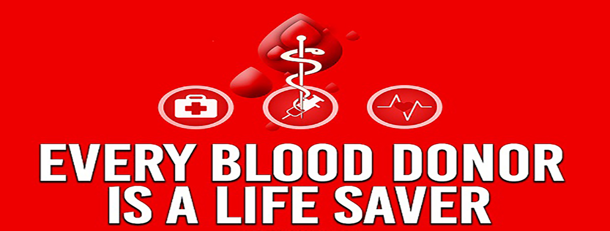
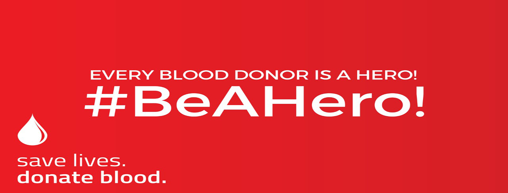

1 / 3

2 / 3

3 / 3

In order to raise awareness about this life-saving procedure, the world observes 14th June as Blood Donor Day. It promotes blood donation and urges people to save lives by donating blood.
Furthermore, this day is quite an important day as it makes people about safe blood. People need to know the basics to be able to donate blood. For instance, there are certain criteria one must fulfill to donate blood. Not everyone knows that. Thus, this day helps in doing so.
Most importantly, on this day, the WHO organizes a campaign that invites people to donate blood. A person eligible to donate blood must fall in the age bracket of 17-66 years of age. They must weigh more than 50 kgs and have sound health. People suffering from diseases like diabetes, hypertension and more cannot donate blood.